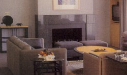
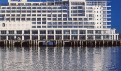

The conference venue for InCoB 2004 is the Aotea Centre which forms part of The Edge® in central Auckland. Opened in 1990 by Dame Kiri Te Kanawa, the Aotea Centre is a stunning example of modern contemporary architecture, featuring marble foyer entrances and comfortable surroundings. The Maori name "Aotea" has several meanings in English, the most common one being "White Cloud" or "Beyond the mist, a new beginning". (The correct pronunciation is OW-TAY-AH).
Accommodation is not included in the registration fee, and therefore meeting attendees are responsible for making their own housing arrangements. A diversity of choices is available within walking distance of the conference venue. Below is a list of some of hotels which are close to the Aotea Centre. Other accommodation venues may to be sourced via the web.
Auckland's dynamic personality is complemented by an extensive range of accommodation from five-star luxury hotels to intimate bed and breakfasts. The vast majority of Auckland's 6000-plus hotel rooms and apartments are located within five minutes walk of the Aotea Centre.
Backpackers information can be found at the Kiwi International Queen Street Hotel or Auckland Central Backpackers.
View a map of Accommodation Locations
| The Carlton | From NZD 155 plus GST per night | |
|
 This is the closest hotel to the Aotea Centre, with an underpass providing shelter and quick access between the hotel and the Aotea Centre. All rooms feature Sky TV, CNN, Pay TV, clock radio, separate bath/shower, hairdryer, iron, ironing board, bathrobes, mini bar and refrigerator, controlled air conditioning, tea and coffee making facilities, opening windows. Facilities include a gymnasium, sauna, indoor heated pool and outdoor terraced garden area. To book contact Leigh Lewis at conf1@carlton-auckland.co.nz. Mention your attendance at InCoB2004 to ensure you secure the quoted rates. |
||
| Ascott Metropolis | NZD 139 plus GST for a studio room per night | |
|
Situated in then heart of the central business district and within a three minute walk of the Aotea Centre, suites in this five star hotel offer views of Waitemata Harbour and Albert Park. This is a luxurious all-suite hotel with living areas separated from bedrooms. Each suite offers unashamed luxury and clear attention to detail; each with a designer kitchen, internet access, soundproof windows and all the amenities one would expect to find in a five-star hotel. The hotel features state of the art aerobic equipment, a fabulous 22 metre indoor heated lap pool, indoor and outdoor spa pools, sauna and steam room. To book contact Robyn Wright at robynw@orbit.co.nz. Mention your attendance at InCoB2004 to ensure securing the quoted rates. |
||
| Crown Plaza Auckland | NZD 117 plus GST per night | |
|
Located within one minute's walk of the Aotea Centre. Superior accommodation includes a fully equipped Health Club. The Crowne Plaza Auckland is surrounded by a wide range of shopping and entertainment venues as well as many restaurants and cafes offering a variety of ethnic cuisine within easy walking distance. To book contact Robyn Wright at robynw@orbit.co.nz. Mention your attendance at InCoB2004 to ensure securing the quoted rates. |
||
| Duxton Auckland | NZD 135 plus GST for a standard room, NZD 160 plus GST for a deluxe spa room | |
|
The Duxton is conveniently situated 100m from the Aotea Centre. Rooms have a spectacular view of the park, City or harbour. All rooms have a balcony and many feature spa baths and in-room state of the art kitchen facilities. Combining exceptional facilities and outstanding customer service, it is the "attention to detail" that serves to differentiate Duxton Hotel Auckland, ensuring that you enjoy a relaxed and memorable stay. To book contact Robyn Wright at robynw@orbit.co.nz. Mention your attendance at InCoB2004 to ensure securing the quoted rates. |
||
| Hilton Auckland | NZD 225 plus GST for a superior room, NZD 275 plus GST for a deluxe room | |
|
 The Hilton Auckland is a contemporary boutique style hotel located 300 meters out to sea on Princes Wharf and within an easy ten minute walk of the Aotea Centre. All guests are entitled to complimentary access to the fitness centre and outdoor lap pool located on the fourth floor of the hotel. To book email reservations.Auckland@hilton.com mentioning your attendance at InCoB2004 to ensure securing the quoted rates. |
||
|
Click for a map of Locations |
When making accommodation booking directly with the hotel, please mention that you will be attending InCoB 2004 to ensure that you receive preferential rates.